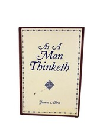

Library › Self-Improvement
As a Man Thinketh — Summary & Key Lessons

The 1903 essay that seeded a century of self-help — mind is the master weaver, of circumstance as much as character.
📖 OPEN THE FULL INTERACTIVE BREAKDOWN →🌐 Read it in Hindi, Hinglish, Gujarati, Tamil & 22 more languages — free, with audio.
💡 The Big Idea
Allen's slim essay — barely sixty pages, published in 1903 — is the headwater of modern self-development: Hill, Peale, Covey, and the entire mindset literature drink downstream of it. The thesis, compressed in its title (from Proverbs: 'as a man thinketh in his heart, so is he'): thought is CAUSAL — character is the complete sum of a person's thoughts; circumstances don't make the man, they REVEAL him (and are themselves gradually shaped by the thought-life: the mind attracts what it secretly harbors); body follows mind (a century before psychosomatics had journals); purpose-linked thought is force while drifting thought is decay; achievement is thought crystallized; and vision — the cherished ideal — is prophecy: 'the greatest achievement was at first and for a time a dream.' Its Victorian severity (readers wince at its treatment of victimhood) is also its power: no book places responsibility more totally, or more usefully, in the reader's own head.
🧠 The 6 Key Lessons
Lesson 1: The Garden of the Mind: Thought Makes Character
Chapter 1: Thought and Character
Allen's founding metaphor: the mind is a GARDEN — intelligently cultivated or allowed to run wild, but never idle; and if no useful seeds are deliberately planted, useless weed-seeds WILL fall in and reproduce their kind. The doctrine beneath: character is not a possession but a PRODUCT — 'the complete sum of all his thoughts' — assembled thought by thought with mathematical impartiality (every thought-seed 'blossoms sooner or later into act, and act bears its own fruitage of opportunity and circumstance'). The corollary that gives the essay its permanent edge: this law operates whether attended or not — the person who doesn't garden is still growing SOMETHING, just not by choice; and self-mastery therefore begins as agriculture: watching, weeding, planting, and tending the only plot wholly yours. Allen's cause-and-effect insistence — 'a noble and Godlike character is not a thing of favor or chance, but the natural result of continued effort in right thinking' — strips both credit and excuse from circumstance: the harvest testifies to the gardening, always.
📖 Example: Allen's own life quietly certifies the essay: a factory worker at fifteen after his father's murder, self-educated through disciplined reading and reflection — the gardening metaphor written by a man who had no other plot available than his own mind, and who… Read the full example →
⚡ Do this: Take the gardener's census: for three days, log your recurring thoughts honestly (worry loops, resentments, ambitions, judgments) — then sort: weeds or crops? Choose one weed for systematic removal (replacement thought prepared in advance) and one crop for daily deliberate planting. Tend both for thirty days; inspect the yard.
Lesson 2: Circumstance Reveals the Man — and Then Obeys Him
Chapter 2: Effect of Thought on Circumstances
The essay's most bracing — and most contested — chapter: circumstances do not MAKE the man; they REVEAL him to himself; and over time, the outer life comes to mirror the inner ('the soul attracts that which it secretly harbors; that which it loves, and also that which it fears'). Allen's mechanism is behavioral, not mystical: thoughts crystallize into habits, habits solidify into circumstances — the anxious thought-life building avoidant habits building shrunken opportunities; the disciplined thought-life compounding oppositely. His hard sayings deserve their controversy and their hearing: people 'do not attract that which they want, but that which they ARE'; the complaint against circumstance, while remaining inwardly unchanged, is asking the harvest to differ from the seed. The workable core beneath the severity: you cannot directly choose your circumstances, but you choose your thoughts — and 'circumstances grow out of thought' with enough lag that today's inner work reads as next year's outer luck. The man who perceives this 'ceases to kick against circumstances and begins to use them as aids to his more rapid progress.'
📖 Example: Allen's paired portraits carry the argument: the poverty-stricken man willing to improve his circumstances but not himself — shirking work, rationalizing corners cut, blaming employers — whose thought-life daily rebuilds the exact conditions he curses;… Read the full example →
⚡ Do this: Run Allen's audit on your worst circumstance: list the thoughts and habits you bring TO it daily (not the ones it 'causes' — the ones you supply). Change one supplied input for thirty days while touching nothing external — and log whether the circumstance's texture shifts. The lag is the test most people quit before grading.
Lesson 3: Thought, Body & Purpose: The Physiology and the Rudder
Chapters 3–4: Effect of Thought on Health / Thought and Purpose
Two brief chapters, both ahead of their century. HEALTH: 'the body is the servant of the mind' — anxiety, malice, and fear write themselves into the flesh (Allen's 1903 claims — worry aging the face, grief disordering the body — now read as an early draft of psychosomatic medicine and stress physiology); his prescriptions: cheerful thought as tonic, and the observation that 'there is no physician like cheerful thought.' PURPOSE: the essay's engineering chapter — thought without an aim dissipates ('aimlessness is a vice'), the drifting mind falling to 'petty worries, fears, troubles, and self-pityings... which lead to failure as surely as deliberately planned sins'; the remedy is a LEGITIMATE CENTRAL PURPOSE: one aim made the centralizing point of thought, pursued through inevitable failures (each failure, to the purpose-linked mind, mere strength-training: 'he who has conquered doubt and fear has conquered failure'). Even those not ready for a great purpose, Allen counsels, should fix attention on the FLAWLESS PERFORMANCE OF PRESENT DUTY — focus itself being the muscle that later purposes will require.
📖 Example: The purpose chapter's image became the genre's stock metaphor: thought joined to purpose as a rudder — without which the vessel drifts to any rock; with which, even storms become navigation. Allen's duty counsel has its own lineage: the 'do the present task… Read the full example →
⚡ Do this: Fix the rudder: write your one central purpose (or, if genuinely unready, elect your present duty as the interim purpose) and link the day's first thought to it each morning. Health-side: catch one chronic body-writing thought (the worry you carry somatically) and prescribe its cheerful counter-thought — taken as literally as medicine, thrice daily.
Lesson 4: Vision, Serenity & the Dreamer's Vindication
Chapters 5–7: The Thought-Factor in Achievement / Visions and Ideals / Serenity
The closing movement pays the essay's promises. ACHIEVEMENT: 'all that a man achieves and all that he fails to achieve is the direct result of his own thoughts' — victories as crystallized thought, held only by vigilance ('many give way when success is assured, and rapidly fall back into failure'). VISIONS: the chapter generations memorized — 'the greatest achievement was at first and for a time a dream'; the oak sleeps in the acorn; dreamers are 'the saviors of the world'; and the composer, sculptor, and prophet earn their vindication: 'dream lofty dreams, and as you dream, so shall you become — your vision is the promise of what you shall one day be.' Allen's realism anchors the poetry: the vision is realized through GRADUATED effort (his shop-boy who dreams of better things while diligently mastering present ones, each mastery expanding the next possibility), and the world's eventual applause ('how lucky!') always omits the process ('they do not see the trials and failures... the long and arduous journey'). SERENITY closes the whole: calmness as 'the last lesson of culture' — the self-controlled mind as finished product, more valuable than gold, the still harbor every storm-tossed reader was seeking on page one. 'Self-control is strength; Right Thought is mastery; Calmness is power.'
📖 Example: The luck-autopsy passage is the essay's most quoted realism: observers who see the prosperous sage and say 'how highly favored he is!' — never having witnessed the sacrifices, the 'many a heartache and darkness' the vision's realization invoiced; Allen's… Read the full example →
⚡ Do this: Write the lofty dream without apology — then Allen's installment plan beneath it: the present task whose flawless performance is this month's full payment. Guard one victory currently held (vigilance audit: where has assured success relaxed your thinking?). And train the closing power directly: one deliberately calm response daily in exactly the situation that usually forfeits it — serenity, practiced retail.
Lesson 5: Thought Is the Seed: Character Blooms From the Mind
Part 1: The Law
Allen's foundational axiom: the mind is a garden, and thoughts are the seeds — whatever you plant, repeatedly and habitually, grows into your character, and your character grows into your circumstances. A man does not become dishonest suddenly; he watered dishonest thoughts until they bore fruit. This makes self-mastery a daily horticulture: guard what enters the mind, because today's casual thought is tomorrow's habit, next year's character, and eventually your destiny. The person who wants to change their life must first change what they allow themselves to think — everything else follows the thought.
📖 Example: Allen uses the metaphor of a gardener: the same soil grows weeds and flowers, depending only on what is planted and tended. Two people in identical circumstances end up in different lives because their inner gardens were cultivated differently. Read the full example →
⚡ Do this: This week, audit your mental diet — what you read, watch and repeat to yourself. Replace one hour of negative input with one hour of nourishing input.
Lesson 6: Calmness of Mind: The Strength of the Quiet Thinker
Part 2: The Fruits
Allen's closing chapter is a portrait of the calm man — the one who has mastered his thoughts and therefore cannot be easily shaken. Calmness is not dullness; it is the collectedness that comes from inner discipline. The calm person thinks clearly under pressure, decides wisely in chaos, and radiates a quiet strength that others instinctively trust. Allen's promise: as you learn to still the inner storms, you become a shelter for others. The man who is master of himself is never at the mercy of events — because his peace depends on nothing outside him.
📖 Example: Allen describes how the truly strong are rarely the loud — the calm leader in a crisis steadies everyone around them by their mere presence, while the agitated leader multiplies the panic. Calmness is the rarest and most powerful form of strength. Read the full example →
⚡ Do this: Practice one 5-minute stillness session daily (eyes closed, breath watched, thoughts observed). Within two weeks, notice your default response to stress beginning to shift.
✅ 5-Step Action Plan
- Census the garden: three days of thought-logging, one weed out, one crop in.
- Audit your supplied inputs to the worst circumstance; change one for 30 days.
- Fix the rudder: central purpose written, linked to each morning's first thought.
- Post the lofty dream with its present-duty installment plan.
- Practice serenity retail: one deliberately calm response daily.
⚠️ When This Doesn't Work
Allen's 'thoughts become things' is the most quoted self-help line ever — and Speak Asia built an entire empire on weaponising it: 1.7 million Indians were told to think positively about guaranteed returns, to visualise their earnings, to stop doubting — and the doubts were the only true thing in the room. The power of thought is real; so is the power of other people's thoughts aimed at your wallet. Think positive, verify everything.
💀 The Graveyard Proves It
📋 Speak Asia — 24 Lakh Indians Paid to Fill Surveys That Nobody Wanted. Burn: ₹2,200 crore from 24 lakh 'panelists'. Read the full case study →
💬 Best Quotes from As a Man Thinketh
- “A man is literally what he thinks, his character being the complete sum of all his thoughts.”
- “Men do not attract that which they want, but that which they are.”
- “Dream lofty dreams, and as you dream, so shall you become. Your vision is the promise of what you shall one day be.”
Interactive version: mark lessons as read, listen in your language, share quote cards.